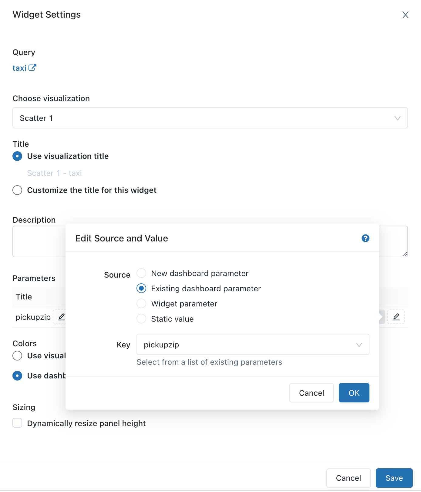

Query parameters
A query parameter lets you substitute values into a query at runtime. Any string between double curly braces {{ }} is treated as a query parameter. A widget appears above the results pane where you set the parameter value. Query parameters are more flexible than query filters, and should only be used in cases where query filters are not sufficient.
Add a query parameter
Type
Cmd + I. The parameter is inserted at the text caret and the Add Parameter dialog appears.Keyword: The keyword that represents the parameter in the query.
Title: The title that appears over the widget. By default the title is the same as the keyword.
Type: Supported types are Text, Number, Date, Date and Time, Date and Time (with Seconds), Dropdown List, and Query Based Dropdown List. The default is Text.
Enter the keyword, optionally override the title, and select the parameter type.
Click Add Parameter.
In the parameter widget, set the parameter value.
Click Apply Changes.
Click Save.
Alternatively, type double curly braces {{ }} and click on the gear icon near the parameter widget to edit the settings.
To re-run the query with a different parameter value, enter the value in the widget and click Apply Changes.
Edit a query parameter
To edit a parameter, click the gear icon beside the parameter widget. To prevent users who don’t own the query from changing the parameter, click Show Results Only. The <Keyword> parameter dialog appears.
Change the order of parameters
To change the order in which parameters are shown, you can click and drag each parameter to the desired position.
Query parameter types
Text
Takes a string as input. Backslash, single quote, and double quote are escaped, and Databricks adds quotation marks to this parameter. For example, a string like mr's Li"s is transformed to 'mr\'s Li\"s' An example of using this could be
SELECT * FROM users WHERE name={{ text_param }}
Number
Takes a number as its input. An example of using this could be
SELECT * FROM users WHERE age={{ number_param }}
Dropdown List
To restrict the scope of possible parameter values when running a query, use the Dropdown List parameter type. An example would be SELECT * FROM users WHERE name='{{ dropdown_param }}'. When selected from the parameter settings panel, a text box appears where you enter your allowed values, each value separated by a new line. Dropdown lists are Text parameters. To use dates or dates and times in your Dropdown List, enter them in the format your data source requires. The strings are not escaped. You can choose between a single value or multi-value dropdown.
Single value: Single quotes around the parameter are required.
Multi-value: Toggle the Allow multiple values option. In the Quotation drop-down, choose whether or not to wrap the parameters with quotes or use single or double quotes. If you choose quotes, you don’t need to add quotes around the parameter.
In your query, change your WHERE clause to use the IN keyword.
SELECT ...
FROM ...
WHERE field IN ( {{ Multi Select Parameter }} )
The parameter multi-selection widget lets you pass multiple values to the database. If you select the Double Quotation Mark option for the Quotation parameter, your query reflects the following format: WHERE IN ("value1", "value2", "value3")
Query Based Dropdown List
Takes the result of a query as its input. It has the same behavior as the Dropdown List parameter. You must save the Databricks SQL dropdown list query in order use it as an input in another query.
Click Query Based Dropdown list under Type in the settings panel.
Click the Query field and select a query. If your target query returns a large number of records performance will degrade.
If your target query returns more than one column, Databricks SQL uses the first one. If your target query returns name and value columns, Databricks SQL populates the parameter selection widget with the name column but executes the query with the associated value.
For example, suppose the following query returns the data in the table.
SELECT user_uuid AS 'value', username AS 'name'
FROM users
value |
name |
|---|---|
1001 |
John Smith |
1002 |
Jane Doe |
1003 |
Bobby Tables |
When Databricks runs the query, the value passed to the database would be 1001, 1002, or 1003.
Date and Time
Databricks provides a number of options to parameterize date and timestamp values, including options to simplify parameterization of time ranges. Select from three options of varying precision:
Option |
Precision |
Type |
|---|---|---|
Date |
day |
|
Date and Time |
minute |
|
Date and Time (with seconds) |
second |
|
When choosing a Range parameter option, you create two parameters designated by .start and .end suffixes. All options pass parameters to your query as string literals; Databricks requires that you wrap date and time values in single quotes ('). For example:
-- Date parameter
SELECT *
FROM usage_logs
WHERE date = '{{ date_param }}'
-- Date and Time Range parameter
SELECT *
FROM usage_logs
WHERE modified_time > '{{ date_range.start }}' and modified_time < '{{ date_range.end }}'
Date parameters use a calendar picking interface and default to the current date and time.
Note
The Date Range parameter only returns correct results for columns of DATE type. For TIMESTAMP columns, use one of the Date and Time Range options.
Dynamic date and date range values
When you add a date or date range parameter to your query, the selection widget shows a blue lightning bolt icon. Click it to display dynamic values like today, yesterday, this week, last week, last month, or last year. These values update dynamically.
Important
Dynamic dates and date ranges aren’t compatible with scheduled queries.
Using query parameters in dashboards
Optionally, queries can leverage parameters or static values. When a visualization based on a parameterized query is added to a dashboard, the visualization can be configured to use either a:
Widget parameter
Widget parameters are specific to a single visualization within a dashboard, appear within the visualization panel, and the parameter values specified apply only to the query underlying the visualization.
Dashboard parameter
Dashboard parameters can apply to multiple visualizations. When you add a visualization based on a parameterized query to a dashboard, by default the parameter will be added as a dashboard parameter. Dashboard parameters are configured for one or more visualizations within a dashboard and appear at the top of the dashboard. The parameter values specified for a dashboard parameter apply to visualizations reusing that particular dashboard parameter. A dashboard can have multiple dashboard parameters, each of which may apply to some visualizations and not to other visualizations.
Static value
Static values are used in lieu of a parameter that responds to changes. Static values allow you to hard code a value in place of a parameter and will make the parameter “disappear” from the dashboard or widget where it previously appeared.
When you add a visualization containing a parameterized query, you can choose the the title and the source for the parameter in the visualization query by clicking the appropriate pencil icon. You can also select the keyword and a default value. See Parameter properties.
After adding a visualization to a dashboard, access the parameter mapping interface by clicking the vertical ellipsis on the top right of a dashboard widget then clicking Change widget settings.
Parameter properties
Title: The display name that appears beside the value selector on your dashboard. It defaults to the parameter Keyword. To edit it, click the pencil icon . Titles are not displayed for static dashboard parameters because the value selector is hidden. If you select Static value as your Value Source then the Title field is grayed out.
Keyword: The string literal for this parameter in the underlying query. This is useful for debugging if your dashboard does not return expected results.
Default Value: The value used if no other value is specified. To change this from the query screen, execute the query with your desired parameter value and click the Save button.
Value Source: The source of the parameter value. Click the pencil icon to choose a source.
New dashboard parameter: Create a new dashboard-level parameter. This lets you set a parameter value in one place on your dashboard and map it to multiple visualizations.
Existing dashboard parameter: Map parameter to an existing dashboard parameter. You must specify which pre-existing dashboard parameter.
Widget parameter: Displays a value selector inside your dashboard widget. This is useful for one-off parameters that are not shared between widgets.
Static value: Choose a static value for the widget, regardless of the values used on other widgets. Statically mapped parameter values do not display a value selector anywhere on the dashboard which is more compact. This lets you take advantage of the flexibility of query parameters without cluttering the user interface on a dashboard when certain parameters are not expected to change frequently.

Frequently asked questions (FAQ)
Can I reuse the same parameter multiple times in a single query?
Yes. Use the same identifier in the curly brackets. This example uses the {{org_id}} parameter twice.
SELECT {{org_id}}, count(0)
FROM queries
WHERE org_id = {{org_id}}
Can I use multiple parameters in a single query?
Yes. Use a unique name for each parameter. This example uses two parameters: {{org_id}} and {{start_date}}.
SELECT count(0)
FROM queries
WHERE org_id = {{org_id}} AND created_at > '{{start_date}}'